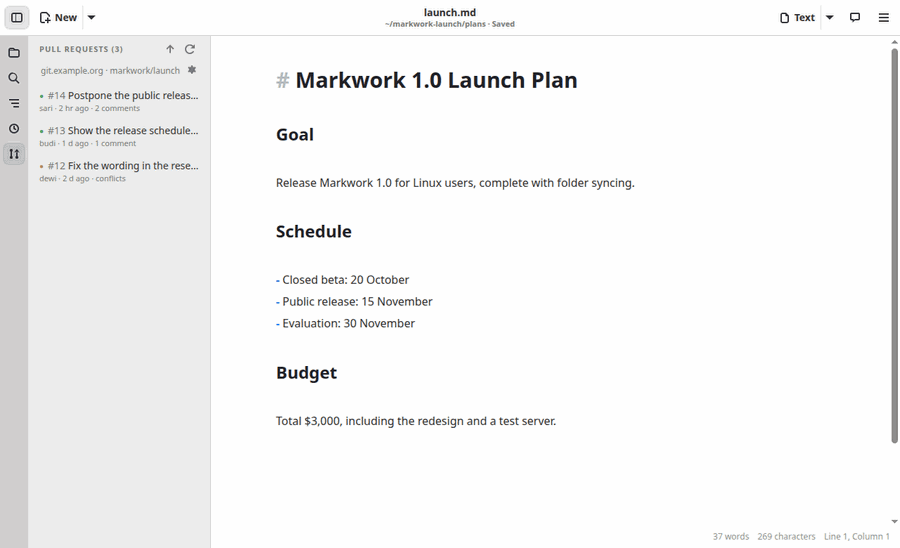
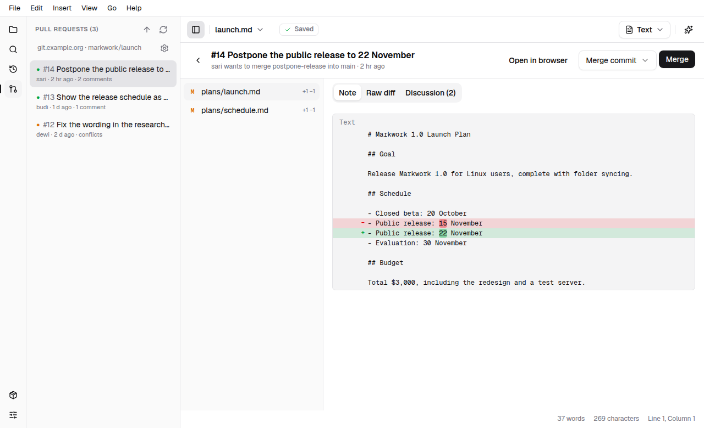
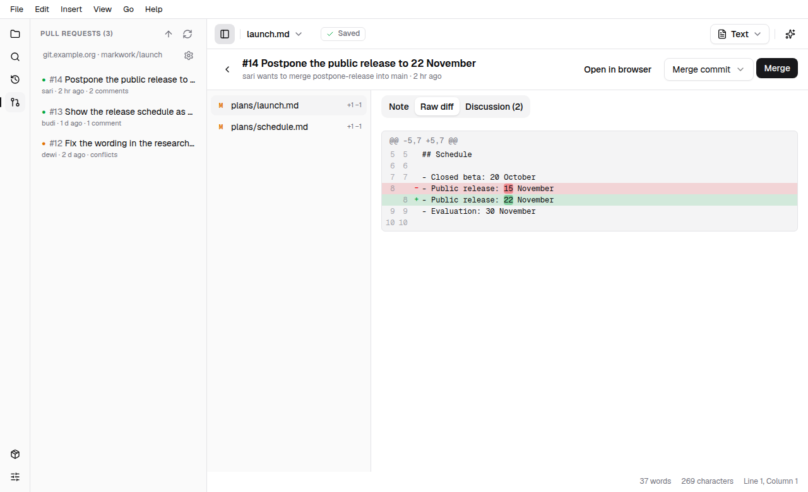
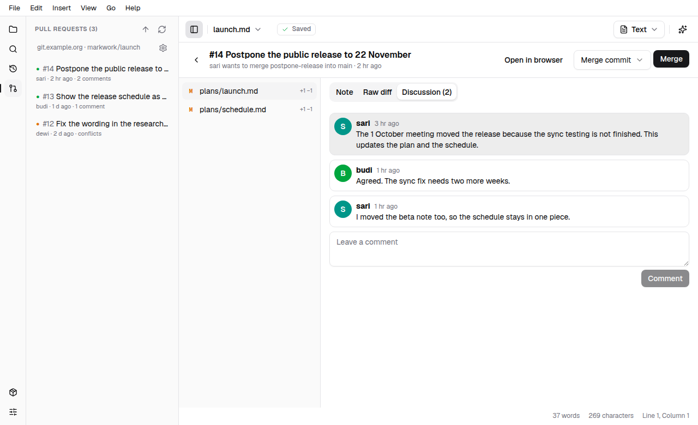
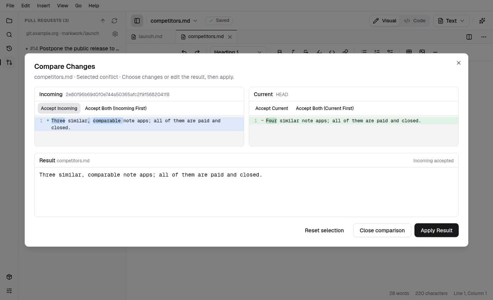
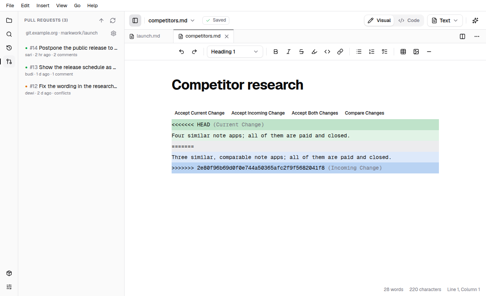
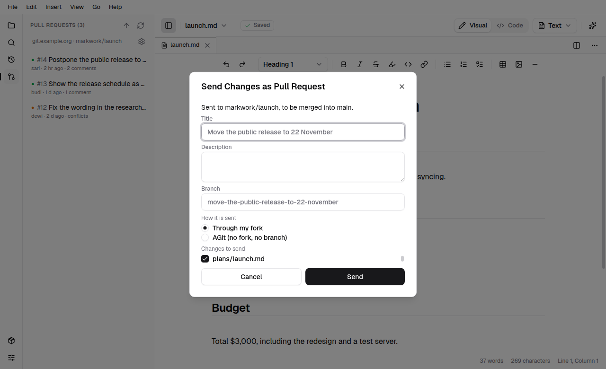

Workspace
Collaboration
Review and merge the pull requests of your repository without leaving your notes, and send your own changes as a pull request. It works with a Forgejo or Gitea server, and the work folder has to be a clone of the repository.

Connect to a server
Markwork finds the server by itself: it reads the address of the origin remote of the work folder (https://git.example.org/team/notes.git means the server git.example.org and the repository team/notes). A remote over SSH (git@git.example.org:team/notes.git) is read the same way and talks to the server over https on its default port. A folder without a remote, or whose remote is not a hosted repository, says so in the tab.
Only an access token is needed:
- On the server, create an access token in your account settings (Applications) that may read and write repositories.
- Open the Pull requests view (the icon with the two connected lines in the activity bar) and click the server line at the bottom of the tab.
- Paste the token, press Test connection (it says how many pull requests it can see, or why the server refused), and press Save.
The token is stored in the system keyring, one per server, and in a file with 0600 permissions (~/.config/markwork/forge-<server>.token) when there is no keyring. It is never written to the settings. The MARKWORK_FORGE_TOKEN environment variable is used first when it is set; the dialog then says so, because a token saved there would not be used. Saving the dialog with the field empty removes a saved token.

The pull requests tab
- Every open pull request is a row: its title, then #number · author · time of the last activity · comments, newest activity first. The heading of the tab counts them.
- The dot says what the server thinks: green can be merged, yellow conflicts with the base branch, gray the server has not worked it out yet.
- Markwork asks the server for the list now and then (every 60 seconds; Preferences → General → Collaboration → Check every, 30 seconds to an hour), and again when you press the refresh button. It only reads; nothing is sent without your click.
- When a pull request is opened or updated, you get a toast if the window is in front and a desktop notification if it is not (Desktop notifications in the same preferences turns both off). The pull requests that were open when the folder was opened are not announced.
- The button next to refresh sends your changes as a pull request (see below). The line at the bottom names the server and the repository.
Reviewing a pull request
Click a pull request. The review page opens in the area of the editor; the arrow at its top left goes back to your document, and opening another folder closes it. On the left are the changed files with their status (Added, Modified, Deleted, Renamed) and the number of lines; on the right the change of the chosen file, in three tabs.
- Note. A Markdown file is shown the way a note is read: the Fields of its frontmatter that changed (
- date: 2026-10-12then+ date: 2026-10-14), then the text with the lines that changed marked in red and green. A new note is all added, a deleted one all removed. A file that is not a note has no Note tab, and a note that is too large to compare says so there (the Diff tab still shows it). - Diff. The unified diff of that file, as in the History window.
- Discussion. The description of the pull request first, then its comments. Write a comment in the box at the bottom and press Comment; it stays in the box if the server did not take it.


A pull request that is closed or merged says so in a banner at the top. A binary file says there is no text to compare, and the page asks the server for the text of both versions, so a file is shown a moment after you choose it.
Merging
The Merge button at the top right merges the pull request on the server. Its arrow offers the three ways the server knows:
- Merge commit: keeps every commit of the pull request (the button itself).
- Squash and merge: combines them into one commit.
- Rebase and merge: puts them on top of the base branch without a merge commit.
Merging changes the repository for everybody, so Markwork asks first and says which way. Afterwards, when the work folder is on the base branch (main), it is brought up to date with git pull --ff-only and the file tree is refreshed. A folder on another branch is left alone, and the toast says why; a pull that fails (for example because of local changes) is reported with git's reason, and the merge itself still counts. The button is off while the server says the pull request conflicts.
A pull request that conflicts
A yellow pull request has a banner with Resolve locally…. It follows the way the server itself suggests for a manual merge:
- The folder has to be on the base branch with nothing uncommitted (files git does not know are fine) and no merge in progress; if not, the toast says what to do first.
- Markwork asks, then brings your base branch up to date from the server (only if it can move forward; a base that has diverged from the server stops here), fetches the pull request, and merges it into your base branch.
- The files that conflict open in tabs in source mode, so the markers git left (
<<<<<<<,=======,>>>>>>>) are plain text and not formatted as Markdown. Each conflict has a green side (current, what your folder has) and a blue side (incoming, what the pull request brings). The branch names on the marker lines are followed by (Current Change) and (Incoming Change), like VS Code. These labels are only shown in the editor; they are not added to the file. Each conflict has a row of buttons above it: Accept Current Change, Accept Incoming Change, or Accept Both Changes. A choice replaces the whole conflict, markers included, in one undo step. To combine the two sides by hand, just edit the text and delete the three marker lines. - Open the pull request again from the tab. The banner counts the files that still have markers; when none is left, Finish and push saves the files, commits the merge, and pushes the base branch.
- Markwork then records the pull request as merged on the server. Where the repository allows it (the Manually merged option of its Pull Requests settings, or autodetection), the pull request shows as merged; if the repository does not, the toast says so and what to turn on, and the pull request stays open until you close it.
Compare Changes opens a merge view of the selected conflict, including unsaved edits. The two source panes are Incoming on the left and Current on the right, with line numbers and highlighted words. An editable Result pane sits below them. In a narrow window the sources stack.
- Accept Incoming or Accept Current copies that side into the Result preview. Accept Both offers Incoming first or Current first.
- Edit Result to combine the wording yourself. Reset selection clears the preview. These actions do not change the document.
- Apply Result replaces only the selected conflict, including its markers, as one undo step. If the document changed since the comparison was opened, the result is refused; close the comparison and open it again.
- Closing the comparison or pressing Escape discards the preview. Applying a result does not commit or push; use Finish and push after resolving all conflicts.

Abort merge (top right while this is going on) undoes the merge in your folder, after asking. Edits you made to the conflicting files are lost.

Nothing is pushed before you press Finish and push. The merge commit is made in your base branch, and the push needs the right to push there; a protected branch refuses it and the toast gives the server's reason.
Sending your changes as a pull request
Edit your notes as usual. Then choose Send Changes as Pull Request… in the ☰ menu (or the command palette), or the button in the pull requests tab. Open documents are saved first, and the dialog lists the files that changed in the repository, all checked.

- Title and description. The title is also the commit message (the description its body). The branch is named from the title until you type in it.
- Through my fork (the default): the branch is pushed to your own copy of the repository, and the pull request asks to merge it into the original. The copy is made on the server if you do not have one; a repository of the same name that is not a fork stops it before anything is pushed.
- A branch in the repository: offered only when your token may push there. No fork is needed.
- AGit: the push itself opens the pull request, with no fork and no branch on the server. The server has to have AGit enabled, and a description of several lines is sent as one line.
The steps are: create the branch from where the folder is, commit the checked files, push, and open the pull request (AGit has no last step; the pull request shows up in the tab). The folder stays on the new branch and the toast says so, so that further edits go on the same pull request. If a step fails, the others are not run and the toast names it; a failed push says that the commit is on the local branch.
The token reaches git in the environment of the push, as a header: it is not in the command line, in the address of the remote, or in .git/config.
The agent
The assistant does not use this feature, and nothing here is sent to the model. The pull requests are read by Markwork itself.
What it does not do yet
Only Forgejo and Gitea are supported (the same API); GitHub and GitLab are not. There are no comments on a line and no review with an approval yet. See Limitations.